The appearance of the GridTree control can be customized using Microsoft Expression Blend 3 or 4®. This can be achieved through the StyleManager property of type GridTreeStyleManager. The properties required to customize the appearance are defined in the GridTreeStyleManager class.
|
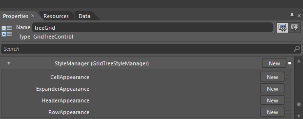 Figure 263: Blend Property Window showing StyleManager properties GridTreeStyleManager properties are organized under different groups, each representing a specific area of the GridTree control. · CellAppearance · ExpanderAppearance · HeaderAppearance · RowAppearance
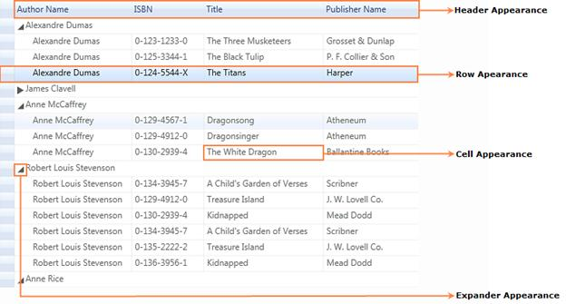 Figure 264: GridTreeStyleManager Properties Cell Appearance In the cell group, cells can be customized by specifying their margins, borders, etc. The following table shows the properties defined in this group.
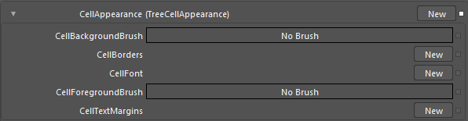 Figure 265: Before Cell Appearance Applied
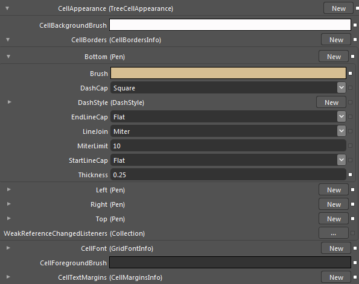 Figure 266: After Cell Appearance Applied XAML Code
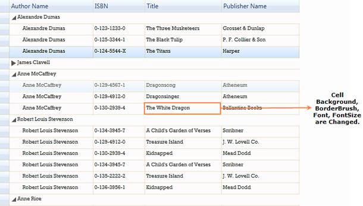 Figure 267: Cell Appearance Applied to GridTree Control
Expander Appearance In the expander appearance group, the properties required to customize expand and collapse buttons are included. The following table shows the properties defined in this group.
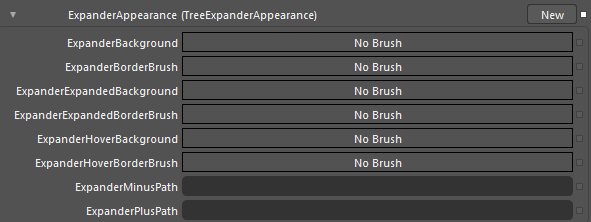 Figure 268: Before Expander Appearance Applied
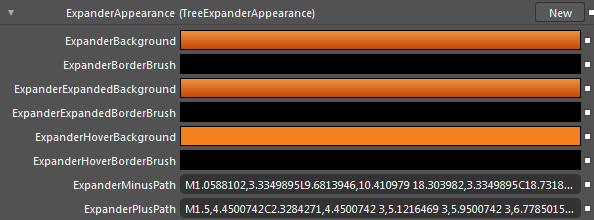 Figure 269: After Expander Appearance Applied
XAML Code
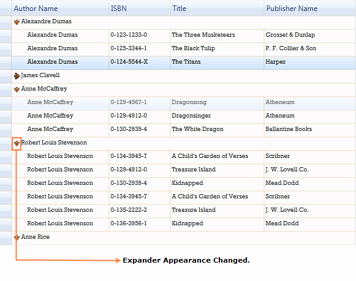 Figure 270: Expander Appearance Applied to the GridTree Control Header Appearance In the header appearance options, properties required to customize the header are defined. The following table shows the properties defined in this group.
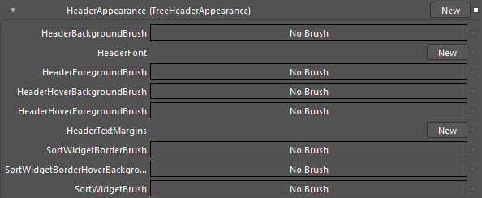 Figure 271: Before Header Appearance Applied
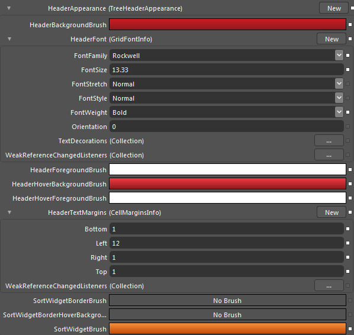 Figure 272: After Header Appearance Applied
XAML Code
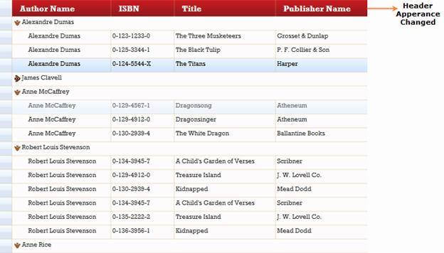 Figure 273: Header Appearance Applied to the GridTreeControl
Row Appearance Properties required to customize the grid rows are defined in the row appearance options. The following table shows the properties defined in this group.
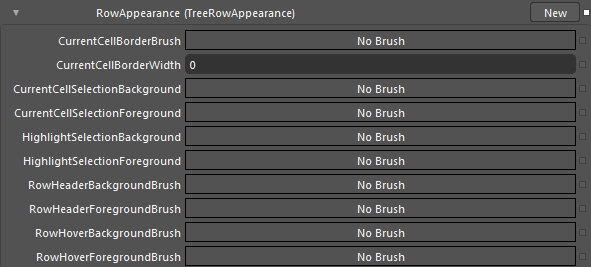 Figure 274: Before Row Appearance Applied
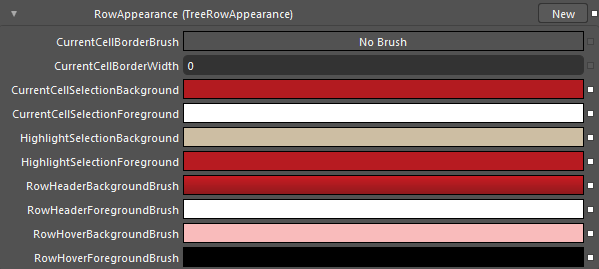 Figure 275: After Row Appearance Applied XAML Code
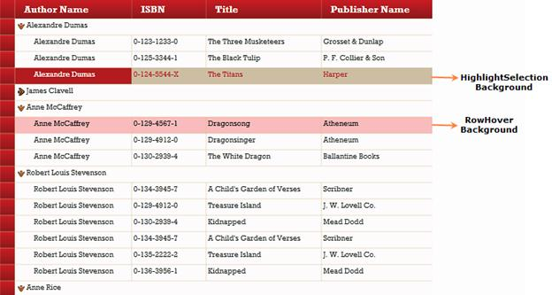
Figure 276: Row Appearance Applied to the GridTree Control
|